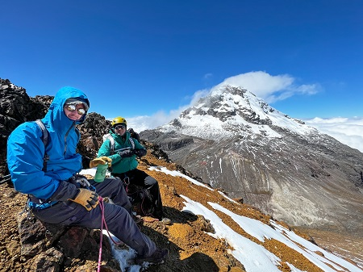
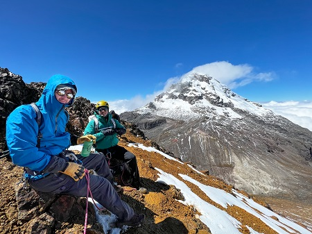

La cumbre del Iliniza Norte, situada a 5126 metros sobre el nivel del mar en la Cordillera Occidental de los Andes en Ecuador, es un destino impresionante y desafiante para los montañistas. Esta cumbre es una de las dos cimas gemelas que conforman los Ilinizas, siendo la otra el Iliniza Sur, que es ligeramente más alta y técnicamente más exigente. La cima del iliniza norte es ideal para entrenar y aclimatarse para alcanzar las cumbres del Cotopaxi 5897 m. y el monte Chimborazo 6.268m. “Programas de aclimatación”
Características Geográficas y Vistas
1. Panorama: Desde la cumbre del Iliniza Norte, los escaladores son recompensados con vistas panorámicas espectaculares. En un día despejado, se puede observar un amplio rango de la cordillera, incluyendo volcanes emblemáticos como el Cotopaxi, el Chimborazo y el Tungurahua. Las vistas se extienden también sobre valles y paisajes diversos, ofreciendo una experiencia visual inolvidable.
2. Terreno: La ruta hacia la cumbre incluye una mezcla de terrenos rocosos, nieve y hielo. La ascensión final puede implicar trepadas en roca y pasos sobre nieve, lo que requiere habilidades técnicas básicas en montañismo. La cumbre misma es rocosa y relativamente estrecha, lo que añade un toque de adrenalina a la experiencia.
Aclimatación
La aclimatación adecuada es crucial para reducir el riesgo de mal de altura y aumentar tus posibilidades de éxito y seguridad en la ascensión. Aquí tienes una guía básica para aclimatarte correctamente antes de intentar escalar el Iliniza Norte:Planificación Previa:
Investiga y Prepara: Conoce la ruta, las condiciones climáticas y los requisitos de equipo. Asegúrate de estar en buena forma física. Consulta a un Médico: Antes de tu viaje, consulta a un médico, especialmente si tienes condiciones preexistentes.Itinerario de Aclimatación:
Días 1-2: Llega a Quito (2,850 metros)
Pasa al menos dos días en Quito para permitir que tu cuerpo comience a adaptarse a la altitud. Aprovecha este tiempo para hacer turismo ligero y descansar.Días 3-4: Traslado y Aclimatación en el ILINIZAS MOUNTAIN LODGE 3300 metros
Realiza caminatas cortas en los alrededores del pueblo EL Chaupi que está a 3300 m. y regresa al Iliniza Mountain Lodge para dormir. Esta es una etapa clave para permitir que tu cuerpo se ajuste a la altitud. Estas caminatas pueden ser alcanzar la cumbre del: Cerro Saquihua 3900 m. y el volcán corazón 4799 m.Día 5: Ascensión a la Cumbre
Sal temprano en la mañana para la cumbre Iliniza Mountain Lodge puede darte todo el soporte que necesitas para la ascensión. ¿Por qué? La ruta puede convertirse en técnica dependiendo del clima por lo que puede requerir equipo de escalada y la asistencia de un guía profesional. Durante la Aclimatación: Hidrátate Bien: Bebe mucha agua para ayudar a tu cuerpo a adaptarse. Come Carbohidratos: Los carbohidratos pueden ser más fáciles de digerir y proporcionan energía rápida. Sigue la Regla de Oro: "Asciende alto, duerme bajo". Esto significa que es beneficioso subir a altitudes más altas durante el día, pero bajar a una altitud más baja para dormir.Monitoreo de Síntomas:
Reconoce los Síntomas del Mal de Altura: Leve: Dolor de cabeza, náuseas, falta de apetito, insomnio, mareos. Moderado a Grave: Fatiga extrema, vómitos, dificultad para respirar en reposo, confusión. Actúa Rápidamente: Si los síntomas empeoran, desciende a una altitud más baja y busca atención médica si es necesario. Ilinizas Mountaion Lodge cuenta con Guías profesionales de Montaña ASEGUIM que te podrán ayudar en cualquier caso de Emergencia.Experiencia de Ascensión
1. Ruta Normal: La ruta más común hacia la cumbre del Iliniza Norte comienza en el Refugio Nuevos Horizontes, situado a unos 4750 metros de altitud. Desde allí, la subida dura generalmente entre 3 y 5 horas, dependiendo de las condiciones y la experiencia del grupo. La ruta incluye pasos conocidos como "Paso de la Muerte", que aunque el nombre puede parecer intimidante, con precaución y equipo adecuado no representa un peligro extremo. 2. Clima y Condiciones: El clima puede ser extremadamente variable y es uno de los desafíos más significativos de la ascensión. Los escaladores deben estar preparados para enfrentar vientos fuertes, bajas temperaturas y cambios rápidos en las condiciones meteorológicas. La aclimatación es esencial debido a la altitud, y se recomienda.Requisitos y Preparación
1. Equipo: El equipo esencial incluye botas de montaña, crampones, piolet, casco, ropa adecuada para el frío, y arnés con cuerda para las partes más técnicas. A pesar de que no se requiere un nivel avanzado de escalada en hielo o roca, una buena condición física y experiencia previa en montañismo son cruciales. 2. Guías: Debido a la naturaleza técnica y a la altitud, muchos montañistas optan por contratar guías experimentados. Los guías no solo proporcionan seguridad adicional, sino que también ofrecen conocimientos sobre la ruta y las condiciones locales, mejorando las posibilidades de una ascensión exitosa y segura.Conclusión
La cumbre del Iliniza Norte, a 5126 metros, es una experiencia gratificante para los montañistas que buscan un desafío moderado en los Andes ecuatorianos. Las impresionantes vistas, el terreno variado y la emoción de alcanzar una cumbre de más de 5000 metros hacen de esta montaña un destino popular y apreciado dentro de la comunidad de montañismo.
 
